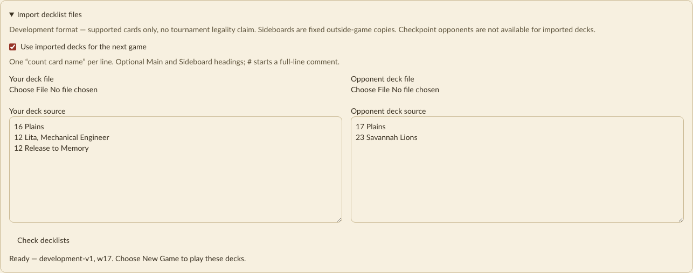
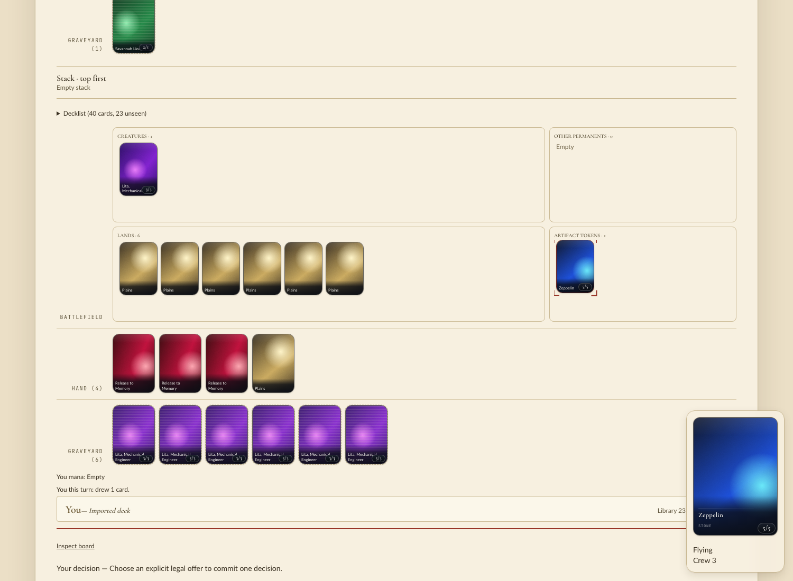
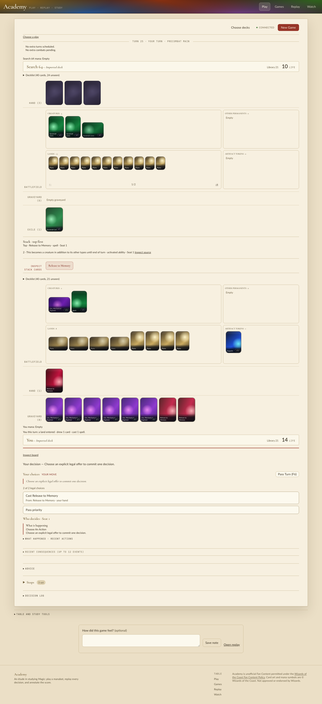

Revision 2831723e4 (does not include main's f1b0109ae, the mana-payment change). Installed extension
managym/_managym.cpython-313-darwin.so is newer than every engine, state and cards source file. The Academy
ready line named that module path, cp313 and world w17.
managym.Env, as a training consumer uses it)I played scripted full games with PlayerConfig decks (Plains, Lita and Release to Memory against Plains and Savannah Lions).
Actions were chosen by the labels from managym.experience_projection.describe_actions.
Activate ability: Lita creates one Zeppelin, which is not a creature, so it is offered no attack until crewed.
Crew offers Tap Spirit to crew / Tap Lita, Mechanical Engineer to crew. After crewing it attacks as a creature (is_animated). All three games were won through Zeppelin attacks.Spirit(T)×3, Lita(T), Zeppelin (untapped, no longer a creature). The Zeppelin untapped because it was an artifact creature at end step.
Lita ("other") and the non-artifact Spirits stayed tapped, as the printed text says.seed 1: graveyard {Savannah Lions: 3, Release to Memory: 1} → graveyard empty, Spirits 0 → 3
seed 2: graveyard {Release to Memory: 2, Savannah Lions: 4} → graveyard empty, Spirits 0 → 4
seed 3: graveyard {Savannah Lions: 3, Release to Memory: 1} → graveyard empty, Spirits 0 → 3/api/decklists/validate and the Import decklist files panel)The hero list 16 Plains / 12 Lita, Mechanical Engineer / 12 Release to Memory was admitted: "Ready — development-v1, w17".
Listing tokens is refused per line: Zeppelin: A token, created by its card; not a deck entry (key token.zeppelin) and the same for
Spirit (resolved to token.plain_spirit). The lowercase lita, mechanical engineer resolves to the card.

Three games with imported decks. I clicked only enabled [data-testid=action-panel] button offers.
Cast Release to Memory with one Lion in the graveyard. Afterwards the opponent's EXILE (1) showed Savannah Lions and our battlefield had one Spirit 1/1. The hero lost to the Lions.Tap Lita, Mechanical Engineer to crew / Tap Spirit to crew and attacked repeatedly. The hero won (opponent at 0).
Stack while crewed: 2 · This becomes a creature in addition to its other types until end of turn · activated ability, with Top · Release to Memory · spell above it.Hover previews show the printed text exactly:
Lita: "Vigilance\nAt the beginning of your end step, untap each other artifact creature you control.\n{3}{W}, {T}: Create a 5/5 colorless Vehicle artifact token named Zeppelin with flying and crew 3. (It has "Tap any number of creatures …")"
Release to Memory: "Exile target opponent's graveyard. For each creature card exiled this way, create a 1/1 colorless Spirit creature token."
Zeppelin: "Flying\nCrew 3"


No browser console errors in any game.
Nothing in the change needed fixing.
f1b0109ae (mana-payment search). Lita's paid activation should be rechecked after delivery integrates main and rebuilds the extension.scratch/mtg-313.md belong to the gate, not this QA.object 88:2, object 85:2 attack Hero, object 94:2 blocks object 88:2.
This is the fallback in academy/ui/src/lib/presentation.ts:102, seen with imported decks.